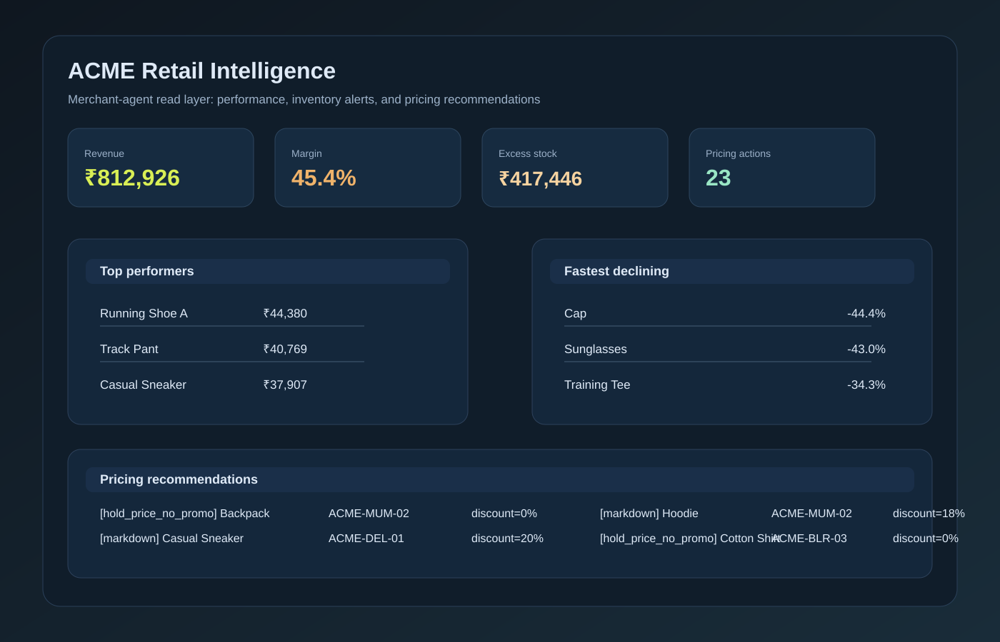

The journal · Ideas in progress
Notes from the process.
Small observations about building products, working with technology, and staying curious when the answer is not obvious yet.

AI product
Building a merchandising agent for retail decision-making
A strong product experience is not just about a model output. It is about translating messy operational data into a decision framework that teams can act on quickly.
This project focuses on retail merchandising: combining transaction data, inventory coverage, and pricing logic into a single operational view. The system identifies where inventory is overstocked, where stockouts are likely, which SKUs are growing or declining, and which actions should be recommended to keep the business healthy.
What makes this useful is that the logic is transparent. Instead of a black-box recommendation, it surfaces business signals such as revenue performance, average margin, stockout risk, and pricing actions. That makes it easier for a merchandising team to trust the output and act on it.
The working demo generated ₹812,926 in revenue, a 45.4% margin, 14 excess-stock alerts, 16 stockout-risk alerts, and 23 pricing recommendations — showing how a simple analytical layer can turn raw data into operational guidance.